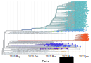
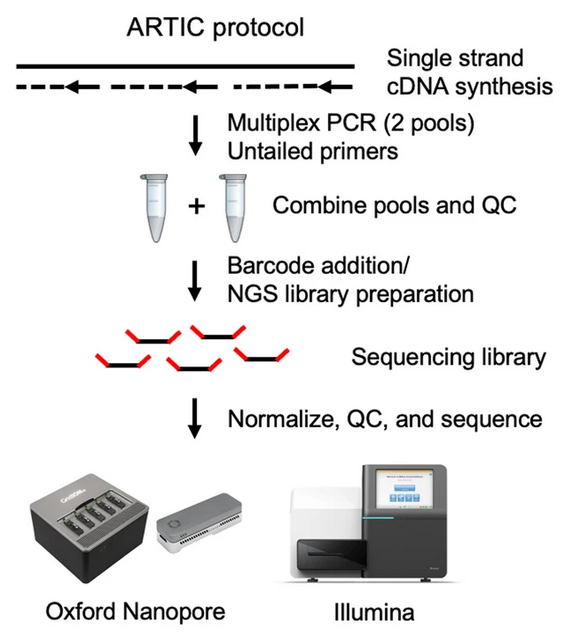
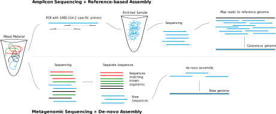
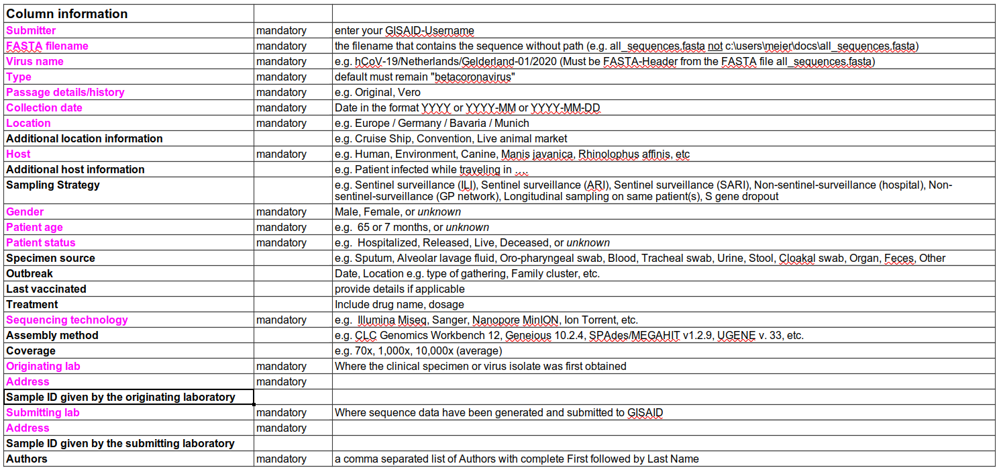

1 SARS-CoV-2 genomic surveillance
- Enumerate some examples of how the genomic surveillance of SARS-CoV-2 has impacted public health decisions during the ongoing pandemic.
- Describe what a variant of concern (VOC) is and how it differs from a variant of interest (VOI).
- Describe the sources of information that can be obtained from GISAID, Pango, Nextstrain and the WHO nomenclature systems.
- Contrast different sequencing protocols (e.g. amplicon, metagenomic) and technologies (e.g. Illumina and Nanopore) commonly used for SARS-CoV-2 sequencing, including the pros and cons of each.
- Understand the steps involved in the widespread ARTIC protocol and the differences between its versions.
- List key metadata fields needed with each sample to make best use of the data and recognise some limitations related to privacy.
1.1 What is SARS-CoV-2?
SARS-CoV-2 (Severe acute respiratory syndrome coronavirus 2) is a betacoronavirus resposible for the COVID-19 disease and caused a global outbreak leading to an ongoing pandemic. The initial spread of this virus started in the city of Wuhan, in China. Despite early efforts to contain its spread in China (through several lockdowns in the country), the virus spread to other provinces within China and, eventually, to other countries across the world. This led to the World Health Organisation (WHO) declaring a public health emergency on 30 January 2020 and then a pandemic on 11 March 2020.
SARS-CoV-2 is an RNA virus, composed of single-stranded RNA. The first SARS-CoV-2 genome was published in January 2020 and is approximately 30Kb long. It encodes several proteins including the so-called Spike protein (or ‘S’ for short), which is used by the virus to interact and eventually enter human cells and cause infection. This interaction happens by the binding of the S protein to the ACE2 protein receptor found in human cells.

The genome sequence of SARS-CoV-2 has been a huge contributor to our ability to manage current pandemic. Namely:
- It allowed the development of a vaccine to target the S protein.
- It allowed the development of diagnostic tests for positive cases (lateral flow test and PCR-based test).
- It allowed the development of protocols for whole-genome sequencing of the virus from positive human samples.
This last point is the focus of our workshop, and we will spend some time looking at how to analyse these data.
You can watch the video below, created by the Maastrich University, if you want to learn more about the lifecycle of the SARS-CoV-2 virus and the role that its different proteins play in this context:
1.2 Genomic Surveillance
The number of SARS-CoV-2 genomes sequenced is the largest of a pathogen ever done. As such, it has enabled us to track how the virus evolves and spreads both at a local and global scale at an unprecendented resolution. This allowed the identification of mutations that affect characteristics of the virus, such as its transmissibility or severity of the disease, and testing new strains of the virus to understand whether they are effectively neutralised by current or future vaccines.
One of the main applications of SARS-CoV-2 sequencing is to infer relationships between the different circulating forms of the virus. This is done by comparing these sequences and building phylogenetic trees that reflect their sequence similarities. From these, it is possible to identify particular clusters of similar sequences that spread faster than expected, and may therefore be associated with mutations that increase the virus’ fitness.

For example, one of the first mutations identified from these sequencing efforts was A23403G (an adenine was replaced by a guanine in position 23,403 of the genome), which caused an aminoacid substitution in the S protein that increased virus infectivity and transmissibility. Since then, many new forms of the virus have been identified as being of particular concern for public health, and have been classified by the WHO as Variants of Concern. These have been named based on letters of the Greek alphabet, and have been a crucial way to inform public health policy and containment measures around the world.
In addition to the WHO variant nomenclature, there are three main projects that have been instrumental in grouping SARS-CoV-2 sequences into similar groups:
- The GISAID nomenclature classifies sequences based on key mutations that define particular groups of sequences in the global phylogeny. It also complements its classification by borrowing information from the Pango nomenclature system.
- The Pango nomenclature is based on the phylogeny of SARS-CoV-2 and defined as groups of sequences that share a common ancestor and a distinctive sequence feature (for example, all share the same single nucleotide change). This nomenclature is also sometimes referred as “Rambaut et al. 2020” after the respective publication.
- The Nextstrain nomenclature is slightly more informal than the above, its main purpose being to facilitate public health discussions. Despite this, it is still informed by the phylogenetic placement of sequences in a tree and therefore has a large overlap with the Pango nomenclature.
We will learn more about how sequences are classified into lineages and variants of concern in the section about Lineage Assignment.
These terms are sometimes used interchangeably in informal conversations about the different forms of SARS-CoV-2. For our purposes, these are the definitions we will use:
A strain is a group of viruses that are sufficiently diverged from others, so that they are quite distinct at a sequence level as well as in their biological properties. SARS-CoV-2 is still considered to be a single strain. Examples of other coronavirus strains are SARS-CoV and MERS-CoV.
The terms lineage and clade are somewhat similar, in that both represent groups of similar sequences, inferred from a phylogenetic analysis and sharing a common ancestor. Their main difference (at least in the current SARS-CoV-2 nomenclature systems) is the level of resolution. Clades tend to be more broadly defined and therefore include more sequences within it. They are useful to discuss long-term trends during a pandemic. Lineages have a finer resolution, being useful to identify patterns related to a recent outbreak.
Since a phylogenetic tree is inherently hierarchical, there isn’t always a clear-cut way of defining where one lineage/clade starts and another ends. That is why lineage classification is a partially manual process, involving human curation by experts.
Finally, the term variant is usually used to refer to WHO’s variants of interest or variants of concern (e.g. the Alpha, Delta and Omicron variants). Variants are distinct from each other by the combination of all sequence changes in their genomes. The term “variant” can be ambiguous when used in the field of bioinformatics, and we return to this in the section about Lineage Assigment
1.3 The GISAID Database
The widespread use of genome sequences would have not been possible without the ability to centrally collect these sequences and make them available to researchers and public health professionals. The main repository used to deposit SARS-CoV-2 sequences is the database managed by the GISAID Initiative. This allows sharing the sequencing data as well as metadata associated with it (such as dates of collection, geo-location, patient information, etc.). For example, the outbreak.info website that we just used in the exercise above directly pulls data from GISAID to update its reports on a daily basis.
At the end of this course you too will be able to contribute to this database, by producing full genome sequences assembled from sequencing data.
Go to the GISAID registration page and create an account, so you can gain access to the data stored in GISAID as well as the ability to submit your own sequences in the future.
1.4 SARS-CoV-2 Sequencing
Routine SARS-CoV-2 sequencing is done with a method generally referred to as amplicon sequencing. This method relies on amplifying the genetic material using polymerase chain reaction (PCR) with a panel of primers designed against the known SARS-CoV-2 genome.
One of the most popular methods for preparing virus RNA for sequencing is amplicon sequencing. This method consists of amplifying the genetic material by PCR using a panel of primers that covers the entire genome of the target virus. This is required, since the starting amount of viral genetic material in a sample is typically very low (most of the material will belong to the host - in this case, human RNA).
The most popular protocol for amplicon sequencing has been developed by the ARTIC network, whose aim is to develop standardised protocols for viral sample processing. The group has designed and tested a panel of primers that work well to amplify the SARS-CoV-2 genome in a mostly unbiased way. This is a challenging task, as the protocol involves pooling hundreds of primers together in a single reaction! Also, as the virus mutates in the population, primers that used to work in the original template genome may no longer work in the new variants circulating in the population (“primer erosion”). Therefore, the ARTIC primers have gone through several versions, which are updated and optimised to work on the most common circulating lineages. These are called “primer schemes” and are made publicly available in a public repository.

Besides amplicon sequencing, other methods can also be used to obtain SARS-Cov-2 genomes:
Metagenomic RNA sequencing was the method used to assemble the first SARS-CoV-2 genome and one of the first sequences in Cambodia. This method consists of extracting viral RNA (using commercially available kits) followed by high-throughput RNA-seq. The resulting sequences are then compared with nucleotide databases of known organisms, and viral sequences selected for de-novo assembly. This approach is suitable when the virus sequence is unknown, but requires a high sequencing depth, increasing its costs.
Sequence capture protocols are also available, whereby the samples are enriched for the target virus by using a panel of probes against the SARS-CoV-2 genome, followed by sequencing and reference-based assembly. This approach is more similar to amplicon sequencing, as it works by enriching the sample for the known virus.

Despite these alternative methods, amplicon sequencing remains one of the most popular methods for large-scale viral surveillance due to its low cost and high-throughput. The data generated from this method will be the focus of this course.
Both of these sequencing platforms can be used to sequence amplicon samples.
Nanopore platforms allow sequencing 96 samples at a time, are readily available as portable devices, and have fast run times. This gives them great flexibility, making them an excellent solution for rapidly building sequencing capacity in a lab.
By comparison, Illumina platforms give higher throughput, are cheaper to run per sample and have lower error rates. However, they require substantial upfront cost to setup and equip in the lab and take longer to run.
Although the ARTIC protocol is one of the most popular used in routine SARS-CoV-2 sequencing, there are alternative sets of primers and protocols available.
For example, Thermo Fisher has the Ion AmpliSeq SARS-CoV-2 kit, designed to work with Ion Torrent sequencing platforms.
An alternative protocol that has been developed by the community is the midnight protocol. This protocol consists of amplifying larger PCR fragments, thus requiring fewer primer pairs than the ARTIC protocol. This leads to a lower complexity in the multiplex PCR reaction and fewer chances of PCR dropout due to mis-priming againts new variants. However, because it uses longer PCR fragments, it can only be used with long-read sequencing (Nanopore) and not short-read sequencing (Illumina).
The Coronavirus Method Development Community on the protocols.io platform is a good source of alternative sequencing protocols for SARS-CoV-2.
1.5 Sample Collection
There are two big considerations when collecting samples for sequencing:
- Is there enough viral material in the sample (viral load)?
- Did I collect all the necessary information about each sample (metadata)?
1.5.2 Metadata
One important consideration when collecting samples, is to record as much information as possible about each sample. The Public Health Alliance for Genomic Epidemiology (PHA4GE) coalition provides several guidelines and a protocol to aid in metadata collection. There are also essential metadata needed to upload new SARS-CoV-2 genome sequences to the GISAID database (Figure).

Two key pieces of information for genomic surveillance are the date of sample collection and the geographic location of that sample. This information can be used to understand which variants are circulating in an area at any given time.
Privacy concerns need to be considered when collecting and storing sensitive data. However, it should be noted that sensitive data can still be collected, even if it is not shared publicly (e.g. via the GISAID database). Such sensitive information may still be useful for the relevant public health authorities, who may use those sensitive information for a finer analysis of the data. For example, epidemiological analysis will require individual-level metadata (“person, place, time”) to be available, in order to track the dynamics of transmission within a community.
This is the general advice when it comes to metadata collection: record as much information about each sample as possible!
1.6 SARS-CoV-2 Bioinformatics
What bioinformatic skills do we need in order to analyse SARS-CoV-2 genome sequencing data? While there are several software tools that have been specifically developed for SARS-CoV-2 analysis (and we will see some of them in this course), there is a set of foundational skills that are applicable to any bioinformatics application:
- The use of the Unix command line. Linux is the most common operating system for computational work and most of the bioinformatic software only runs on it.
- Getting familiar with common file formats in bioinformatics. This includes files to store nucleotide sequences, sequence alignments to a reference genome, gene annotations, phylogenetic trees, amongst others.
- Understand software tools’ documentation and how to configure different options when running our analyses.
We will turn to these topics in the following sessions.
1.7 Exercises
1.8 Summary
- The sequencing of SARS-CoV-2 genomes has allowed the tracking of new variants throughout the pandemic.
- The World Health Organisation defines Variants of Concern as SARS-CoV-2 forms with characteristics of public health concern. This includes increased transmissibility, virulence, disease symptoms or vaccine resistance.
- GISAID, Pango and Nextstrain are organisations whose work includes the classification of SARS-CoV-2 genomes into groups that may later be classified as variants of concern by WHO.
- GISAID also plays a key role as the main database for assembled SARS-CoV-2 genomes, submitted by the community.
- Routine SARS-CoV-2 sequencing is usually done by amplicon sequencing (amplifying an infected sample by PCR using primers that cover the entire genome). The most popular protocol has been developed by the ARTIC network.
- Other methods of sequencing include metagenomic and sequence capture. However, these methods require more sequencing and therefore are not commonly used for sequencing at a population scale.
- Both Illumina and Nanopore platforms can be used for sequencing SARS-CoV-2 amplicon samples.
- Metadata collection is essential for interpreting the results of the sequencing.
- For genomic surveillance purposes recording of geographic location and date of sampling are crucial.
- Other useful information includes details about the sequencing (e.g. sample preparation protocols and sequencing platforms used).